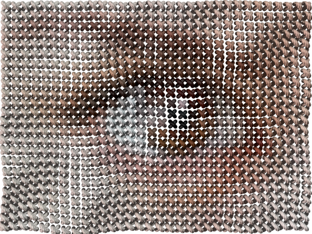
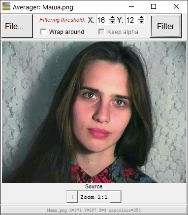

POV-Ray Thread: Linen and Stitch
Converting 2D image into canvas and cross-stitch 3D simulation
POV‑Ray Thread, a bastardly offspring of POV‑Ray Mosaic project is a set of programs, which read pixels of source image and convert them into a complex 3D structure, simulating something textile and thread related, in POV-Ray format.
POV‑Ray Thread programs are freely available at GitHub.
Linen...

linen output rendering example
«Linen» is a program for simulating most common plain weave, seen in many cotton, wool, and practically all linen fabrics. Elemental nodes of linen output are colored after source image pixels, producing colored taffeta or print on canvas look.
Resulting POV‑Ray files are easy to edit, globally changing thread finish (dull/shiny) and texture (normal vectors) to simulate wide range of threads, from single strand plastic to multistrand natural fibers.
...and Stitch
stitch output rendering example
«Stitch» is a program for simulating most common cross-stitching embroidery type, i.e. a cross stitch. Each of 3D stitches produced by program is colored after source image pixel. Stitch pattern may be distorted during rendering, turning too regular artificial appearance into something more natural. Distortion is based on structured Perlin noise pattern.
Currently both POV‑Ray Thread programs use one primitive to simulate main object, but this, as any other export settings, may be overwritten. The easiest way to do so is using external "preset.inc" patch files which, upon importing into main scene file, will override all previous settings.

example of rendering using include file with isosurface main object
Accessory: Adaptive color averager
In cross stitching, single thread is often used to produce several stitches in a row, producing flat single color areas. To help with color reduction for this, a small color reduction utility «Averager» is included into the package.
Unlike regular color reduction utilities, like ones used to create GIF files, «Averager» does not build common palette for the whole image but rather tries to find, isolate, and flatten smooth areas based on local contrast, that is closer to idea of using single thread for the area.
«Averager» is an accessory since it does not produce POV files - it loads PNG file, filters image, and saves filtered image as PNG.
To simplify visual filtering adjustments, «Averager» is equipped with minimal yet suitable GUI.

Now it's time to download POV‑Ray Thread from GitHub and start building your own textile scenes.
...or Move back to main page.